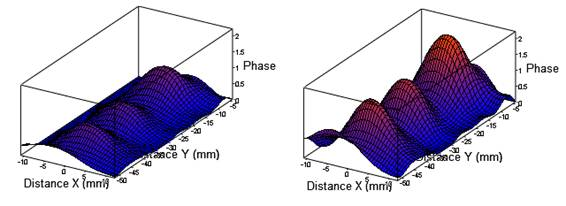

Cuando se abra el programa se podrán encontrar los
siguientes elementos:
JetProcessing está pensado para poder trabajar con el
sistema CUDA de las tarjetas NVIDIA para el procesamiento en paralelo más
rápido de las imágenes de la fase.
Esta ventana sólo aparecerá si su equipo es compatible con
este sistema y le permitirá elegir el modo de cálculo para la aplicación con un
diálogo como el siguiente:
Figura 14. Selección de modo
Elija la primera opción para utilizar el sistema CUDA para
los cálculos (recomendado), o la segunda opción para realizar los cálculos de
forma regular con la CPU.
Si selecciona la casilla “Remember this selection”, el modo
elegido se utilizará cada vez que se inicie el programa, sin preguntar de
nuevo. Para reactivar este diálogo, consulte el capítulo 3.11.
Para continuar pulse “Continue”, o bien haga doble-click
sobre la opción elegida.
En los equipos sin una tarjeta compatible con CUDA, este
diálogo no aparecerá y se seleccionará automáticamente la CPU.
Al abrir el programa por primera vez, se configurarán todos
los valores por defecto para las preferencias y se solicitará un directorio de
trabajo. Para más información acerca de estas dos características, véanse los
apartados 3.11 y 3.7.1.
Para el tipo de imágenes que se pueden procesar con
JetProcessing es necesario siempre fijar una imagen de la referencia, tomada
con el medio de referencia, sin el jet de gas, así como configurar algunos
parámetros de procesamiento. Los parámetros que se configuren se aplicarán
además en el procesado de las imágenes que se carguen.
Este paso es fundamental, y sin él no se podrá realizar
ningún procesamiento.
Para realizarlo vaya al menú Reference à Change Reference, pulse Ctrl+R, o bien
haga click sobre el icono en la barra de herramientas.
El primer paso es seleccionar la imagen de la referencia,
para lo que se proporciona un diálogo como el siguiente:
Figura 15. Selección de la imagen de la referencia
Los elementos disponibles:
·
Get Image From File: Lanza una ventana para elegir un archivo de
imagen para la referencia.
·
Get Image From Camera: Sólo estará disponible si se detecta una
cámara. Toma una imagen de la cámara para la referencia.
·
Camera Settings: Sólo estará disponible si se detecta una cámara.
Permite cambiar las preferencias de la cámara. Véase 3.8.1.
·
Width (mm) y Height (mm): Cuadros para introducir el ancho y el
alto real en milímetros de la imagen. Estos datos servirán para establecer los
valores de los ejes en los gráficos.
·
Save Picture to File: Lanza una ventana para guardar la imagen
actual de la referencia en un archivo.
Una vez establecidos todos los valores, pulse “Next” para
continuar.
El segundo paso brinda la posibilidad de realizar
operaciones sobre la imagen, como giros, transformación de espejo,…
Figura 16. Fijando tamaño
Los elementos disponibles son los siguientes:
·
Horizontal Mirror: Si se selecciona esta casilla se transformará
la imagen con una reflexión con eje vertical.
·
Vertical Mirror: Si se selecciona esta casilla se transformará la
imagen con una reflexión con eje horizontal.
·
No Rotation, Rotate 90º, Rotate 180º, Rotate 270º: Determina un
ángulo de rotación en el sentido de las agujas del reloj para la imagen.
·
Width (pixels) y Height (pixels): Una de las operaciones que se
realiza sobre la imagen es la transformada de Fourier con el algoritmo FFT
(Fast Fourier Transform). Para este algoritmo es necesario que tanto el ancho
como el alto sean un número potencia de 2. En estas casillas se determina el
ancho y alto respectivamente para la imagen, de forma que, introducido un
valor, el programa aproximará a la siguiente potencia de 2.
Todas estas operaciones se podrán observar en la vista
previa a medida que se seleccionan aplicadas sobre la imagen de referencia
actual.
Una vez establecidos todos los valores, pulse “Next” para
continuar.
En esta fase se debe seleccionar, mediante la interfaz
disponible, la zona de la imagen que interesa para el cálculo aplicando una
máscara negra al resto, así como el origen de coordenadas, el punto (0,0) para
los gráficos.
Los elementos disponibles son los siguientes:
·
Save Values to File: Permite guardar los parámetros a un archivo con
extensión “.msk1”.
·
Load Values from File: Permite cargar los parámetros desde un
archivo con extensión “.msk1”.
·
Origin Coordinates (x,y): los valores en píxeles respecto de la
coordenada superior izquierda donde se sitúa el origen de coordenadas. Para fijarlo
modifíquense los valores de las cajas, o bien hágase doble click con el botón
izquierdo sobre la vista previa de la izquierda.
·
Mask Coordinates (X min, X max, Y min, Y max): los valores en
píxeles respecto de la coordenada superior izquierda donde se sitúan las
coordenadas de la esquina superior izquierda y la inferior derecha del
rectángulo de máscara. Para fijarlo modifíquense los valores de las cajas, o
pínchese y arrástrese con el botón derecho en la vista previa de la izquierda.
Una vista previa de la zona seleccionada con la máscara se puede ver a la
derecha.
Figura 17. Fijando la máscara y el origen de coordenadas
Para mayor comodidad, en la vista previa de la izquierda se
puede hacer zoom con la rueda del ratón, así como avanzar hacia otra zona de la
imagen pinchando y arrastrando con el botón izquierdo.
Una vez establecidos todos los valores, pulse “Next” para
continuar.
En esta fase se debe seleccionar, mediante la interfaz
disponible, una máscara sobre la imagen de la transformada de Fourier, que se
usará para filtrar la imagen la imagen en frecuencia: calculando la
transformada, aplicando la máscara, e invirtiendo la transformada de Fourier.
Los elementos disponibles son los siguientes:
·
Save Values to File: Permite guardar los parámetros a un archivo
con extensión “.msk2”.
·
Load Values from File: Permite cargar los parámetros desde un
archivo con extensión “.msk2”.
·
Mask Coordinates (X min, X max, Y min, Y max): los valores en
píxeles respecto de la coordenada superior izquierda donde se sitúan las
coordenadas de la esquina superior izquierda y la inferior derecha del
rectángulo de máscara. Para fijarlo modifíquense los valores de las cajas, o
pínchese y arrástrese con el botón derecho en la vista previa de la izquierda.
Una vista previa de la zona de la seleccionada con la máscara se puede ver a la
derecha.
·
Preview Gain: Ganancia que se aplica a las vistas previas de la
transformada de Fourier. Modifíquese este valor para mejorar la visualización
de las vistas previas.
Para mayor comodidad, en la vista previa de la izquierda se
puede hacer zoom con la rueda del ratón, así como avanzar hacia otra zona de la
imagen pinchando y arrastrando con el botón izquierdo.
Figura 18. Fijando la máscara de Fourier
Una vez establecidos todos los valores, pulse “Next” para
continuar.
Llegado a este punto ya se han fijado todos los parámetros
necesarios. Se mostrará una imagen de la fase de la referencia en la zona de
interés, después de haber aplicado el filtrado en frecuencia.
Nótese que la fase que aparece, aparece entre 0 y 2Pi, con
discontinuidades. La referencia que se usará para procesar las imágenes, será
una imagen como esa, pero con la fase continua, es decir, partiendo del centro
de la imagen, cada vez que se encuentre un salto en la fase, se añade o resta
2Pi, para al final llegar a una imagen con valores entre -2Pi·n y 2Pi·m.
Figura 19. Resultado para la fase de la referencia
Pulse “Finish” para acabar.
Para obtener una primera imagen del jet de gas que se está
midiendo, es necesario pre-procesar la imagen de interferencia tomada con la
imagen de la fase continua de referencia, obtenida en el apartado anterior.
Este proceso consiste en aplicar las mismas operaciones que
se aplicaron a la referencia:
·
Modificarla y establecerla a un tamaño adecuado potencia de 2.
·
Aplicarle una máscara para la zona de interés.
·
Realizar la transformada de Fourier.
·
Filtrar las frecuencias deseadas con la otra máscara.
·
Realizar la transformada de Fourier inversa.
·
Obtener la fase de la zona deseada.
·
Hacer la fase continua.
A lo que se añade el paso donde entra en juego la referencia:
·
Restar a la fase para la imagen que se está procesando, la imagen
de la fase continua de la referencia.
Una vez realizado todo este proceso, se obtiene la primera
imagen del jet de gas, que será lo que se añada a la lista de imágenes, con su
vista previa.
Para pre-procesar y añadir una imagen de interferencia desde
la cámara vaya al menú Image à
Process Image from Camera, pulse I+C, o bien haga click sobre el icono  en la
barra de herramientas.
en la
barra de herramientas.
Obviamente esto sólo se podrá realizar si el sistema detecta
una cámara disponible.
Para pre-procesar y añadir una o varias imágenes de
interferencia desde un archivo vaya al menú Image à Process Images from File, pulse I+L, o bien haga click
sobre el icono  en la barra de herramientas.
en la barra de herramientas.
Todas las imágenes que se pre-procesan se añaden a la lista
de imágenes, a la derecha de la interfaz principal.
Esta lista cuenta con una vista previa de la imagen
pre-procesada, así como con una etiqueta o nombre para la imagen.

Figura 20. Lista de imágenes
Las operaciones que se pueden realizar sobre esta lista de
imágenes son:
·
Cambiar el nombre de la imagen: seleccionando la imagen cuyo
nombre se quiere guardar, y, o bien pulsando F2, o bien pulsando de nuevo sobre
el nombre de la misma imagen.
·
Mover la imagen seleccionada arriba: mediante el menú Image à Move Up, pulsando I+FlechaArriba, o
bien, pulsando sobre el botón “Move Up”.
·
Mover la imagen seleccionada abajo: mediante el menú Image à Move Down, pulsando I+FlechaAbajo, o
bien, pulsando sobre el botón “Move Down”.
·
Eliminar la imagen seleccionada: mediante el menú Image à Delete, pulsando I+Supr, o bien,
pulsando sobre el botón “Delete”.
·
Eliminar todas las imágenes: mediante el menú Image à Delete All, o pulsando Ctrl+Shift+Supr.
Se mostrará un diálogo de confirmación al que se debe responder “Ok”.
Ya se ha pre-procesado una imagen con la referencia, y por
lo tanto, obtenido una primera imagen del jet de gas. Sin embargo, esta primera
imagen, no suele ser buena, e incluso puede aparecer invertida.
Para salvar eso, se añade la segunda parte del procesado: la
aplicación de algoritmos u operaciones (de ahora en adelante simplemente
algoritmos, aunque algunos estrictamente no lo sean) a la imagen inicial, hasta
llegar al resultado final.
Los algoritmos que se pueden utilizar, son los siguientes:
Este algoritmo invierte la imagen, es decir, transforma los
valores positivos en negativos y viceversa.
El resultado de aplicación del algoritmo es el siguiente:
Figura 21. Algoritmo de inversión, antes y después
Se puede aplicar tanto a una imagen, como a una línea
extraída de una imagen.
Este algoritmo elimina la inclinación horizontal, mediante
reducción a mínimos cuadrados.
Calcula la pendiente óptima para cada recta horizontal
mediante la fórmula:

Figura 22. Fórmula pendiente regresión lineal horizontal
A continuación hace la media de todas esas pendientes, y
considera que esa pendiente media es la inclinación lineal horizontal que posee
la imagen, y por lo tanto la elimina aplicando a cada punto la siguiente
fórmula:

Figura 23. Fórmula eliminación inclinación lineal horizontal
El resultado de aplicación del algoritmo es el siguiente:
Figura 24. Algoritmo de eliminación de la inclinación horizontal, antes y después
Se puede aplicar tanto a una imagen, como a una línea
extraída de una imagen.
Este algoritmo elimina la inclinación vertical, mediante
reducción a mínimos cuadrados.
Calcula la pendiente óptima para cada recta vertical
mediante la fórmula:

Figura 25. Fórmula pendiente regresión lineal vertical
A continuación hace la media de todas esas pendientes, y
considera que esa pendiente media es la inclinación lineal vertical que posee
la imagen, y por lo tanto la elimina aplicando a cada punto la siguiente
fórmula:

Figura 26. Fórmula eliminación inclinación lineal vertical
El resultado de aplicación del algoritmo es el siguiente:
Figura 27. Algoritmo de eliminación de la inclinación vertical, antes y después
Este algoritmo elimina ruido de fondo de la imagen. Para
ello, establece un valor base, promediando los valores de los puntos a lo largo
primera y de la última recta vertical de la imagen, zona donde se supone que no
hay jet de gas.
Una vez fijado ese valor, b, establece el nivel base al 0,
aplicando la siguiente expresión:

Figura 28. Fórmula para fijar el nivel base
El resultado de aplicación del algoritmo es el siguiente:
Figura 29. Algoritmo de fijado de nivel base, antes y después
Se puede aplicar tanto a una imagen, como a una línea
extraída de una imagen.
El único cometido de esta operación es sumar a cada punto de
la imagen un valor indicado. Esto puede servir para situar la imagen en unos
rangos adecuados.
Cuando se añada este algoritmo aparecerá una ventana en la
que se deberá introducir la cantidad que se deba sumar:
Figura 30. Diálogo de selección de offset
El resultado de aplicación del algoritmo es el siguiente:
Figura 31. Algoritmo de añadir offset, antes y después
Se puede aplicar tanto a una imagen, como a una línea
extraída de una imagen.
El único cometido de esta operación es multiplicar el valor
de cada punto de la imagen por un factor indicado. Esto puede servir para
situar la imagen en unos rangos adecuados.
Cuando se añada este algoritmo se aparecerá una ventana en
la que se deberá introducir el factor por el que se debe multiplicar:

Figura 32. Diálogo de selección de factor
El resultado de aplicación del algoritmo es el siguiente:

Figura 33. Algoritmo de multiplicar por factor, antes y después
Se puede aplicar tanto a una imagen, como a una línea
extraída de una imagen.
Este algoritmo, se utilizar para convertir una imagen en
simétrica, respecto de un eje vertical central.
El proceso tiene lugar en dos fases:
·
Se busca en cada recta horizontal el punto con valor más alto.
·
Se coloca el punto más alto en el centro de la imagen, y se
asigna a los laterales el valor medio del los puntos a la derecha y a la
izquierda, a la misma distancia del máximo de la imagen original. Si llegado
un momento, considerando que el máximo podía no estar centrado, no se puede
llegar a uno de los dos valores (Derecha o izquierda), se sigue utilizando el
último valor del extremo de la imagen.
El resultado de aplicación del algoritmo es el siguiente:
Figura 34. Algoritmo de simetrización, antes y después
Se puede aplicar tanto a una imagen, como a una línea
extraída de una imagen.
El algoritmo de inversión de Abel realiza la siguiente
integral para cada recta horizontal de la imagen:

Figura 35. Fórmula inversión de Abel
Nótese que esa integral tiene unidades, por lo que la
variable dependiente, tras realizar la integral, tendrá unidades de m-1.
El algoritmo de la inversión de Abel supone que se parte de
una estructura con simetría cilíndrica, como es en este caso un jet de gas, y
se tiene una imagen en la que se ha acumulado el valor de una variable, al
atravesar la estructura con rayos perpendiculares al eje, como es la imagen
producida por el láser al atravesar el jet de gas. Además, debido a la supuesta
simetría cilíndrica, es recomendable simetrizar la imagen antes de realizar
esta operación.
Dadas esas condiciones, la inversión de Abel devuelve el
valor de la variable en una sección que corte longitudinalmente al jet justo
por la mitad.
Esta operación se puede utilizar, por ejemplo para obtener
el índice de refracción del jet de gas, multiplicando por la longitud de onda
utilizada dividido por 2·Pi y sumando uno.
Cuando se añada este algoritmo aparecerá una ventana, en la
que se deberá introducir el número de vecinos que se deban utilizar para
calcular la derivada. Este número se debe aumentar si la imagen que se procesa
tiene mucho ruido:

Figura 36. Diálogo de selección del número de vecinos
El resultado de aplicación del algoritmo es el siguiente:
Figura 37. Algoritmo de Inversión de Abel, antes y después
Se puede aplicar tanto a una imagen, como a una línea
extraída de una imagen.
Este algoritmo extrae un rectángulo de la zona de la imagen
en la que se esté interesado.
Al añadirlo aparecerá una ventana como la siguiente:

Figura 38. Diálogo de selección de rectángulo
En ella se deberá seleccionar la zona de la imagen deseada,
pinchando y arrastrando con el botón izquierdo del ratón, o cambiando los
valores de las cajas. Además la rueda del ratón permite introducir zoom en la
imagen.
El resultado de aplicación del algoritmo es el siguiente:

Figura 39. Algoritmo de extracción de rectángulo, antes y después
Este algoritmo extrae una recta de la zona de la imagen en
la que se esté interesado.
Al añadirlo aparecerá una ventana en la que se deberán
seleccionar los puntos iniciales y final de la recta, pinchando y arrastrando
con el botón izquierdo del ratón, o bien con las cajas establecidas para ese
cometido. Además, una vez fijada, se pueden mover los extremos, pinchando y
arrastrando en ellos, o la recta entera, pinchando y arrastrando en su centro.
Es esta ventana también aparece una recta de la línea que se
está extrayendo para la imagen actual.
Nótese que para comodidad del usuario, también se puede
hacer zoom sobre la imagen con la rueda del ratón.
Figura 40. Diálogo de selección de recta
Una vez visto en qué consisten los algoritmos que se pueden
aplicar, veamos cómo se añaden a la lista de algoritmos.
La lista de algoritmos se encuentra a la izquierda de la
interfaz principal, y contiene todos los algoritmos que secuencialmente se irán
aplicando en el orden indicado a las imágenes de la lista.
Se aplicará o bien, toda la lista de algoritmos, o bien
hasta el algoritmo seleccionado (Véase 3.11).
La lista de algoritmos tiene la siguiente apariencia:

Figura 41. Lista de algoritmos
Para añadir un algoritmo a la lista, se debe seleccionar
primero en la caja superior el tipo de algoritmo se quiere añadir, y a
continuación pulsar sobre “Add Before” o “Add After” para añadirlo antes o
después respectivamente del algoritmo seleccionado.
Si el algoritmo tiene que recibir algún parámetro, aparecerá
la ventana de selección para el parámetro.
Una lista de algoritmos se puede guardar en un archivo con
la extensión “.alg”.
Para realizarlo vaya al menú Algorithm à Save Algorithm List to File, pulse A+S,
o bien haga click sobre el icono en la barra de herramientas.
Una lista de algoritmos también se puede cargar de un
archivo con la extensión “.alg” que haya sido generado previamente.
Para realizarlo vaya al menú Algorithm à Load Algorithm List from File, pulse
A+L, o bien haga click sobre el icono  en la barra de
herramientas.
en la barra de
herramientas.
Al cargar una lista de algoritmos, la anterior se eliminará.
Otras operaciones que se pueden realizar sobre la lista de
algoritmos son:
·
Mover el algoritmo seleccionado arriba: mediante el menú
Algorithm à Move Up, pulsando
A+FlechaArriba, o bien, pulsando sobre el botón “Move Up”.
·
Mover el algoritmo seleccionado abajo: mediante el menú Algorithm
à Move Down, pulsando A+FlechaAbajo,
o bien, pulsando sobre el botón “Move Down”.
·
Editar el algoritmo seleccionado: sólo si el algoritmo tiene
parámetros. Mediante el menú Algorithm à
Edit, pulsando A+E, o bien, pulsando sobre el botón “Edit”.
·
Eliminar el algoritmo seleccionado: mediante el menú Algorithm à Delete, pulsando A+Supr, o bien,
pulsando sobre el botón “Delete”.
La zona central de la interfaz principal está pensada para
la muestra de resultados y tiene la siguiente apariencia:
Figura 42. Zona de muestra de resultados
Es la cadena de texto que se usará para el eje de la
variable dependiente “Z”. El usuario puede cambiarla modificando la caja de
texto.
Existen dos modos de escalado:
·
Auto escalado para el eje Z (“Auto Scale Z Axis” activado): El
valor mayor y menor para la variable dependiente se establece en función de los
valores máximos y mínimos que toma la imagen de forma automática. El resultado
se puede observar en la imagen anterior.
·
Escalado manual (“Auto Scale Z Axis” desactivado): El usuario
introduce en las cajas destinadas para tal efecto los valores máximo y mínimo
que desea mostrar para la variable dependiente, obteniendo el resultado
siguiente:
Figura 43. Gráfico con escalado manual
La aplicación también permite ver una secuencia de gráficos
para las imágenes actualmente en la lista. Para activar esta opción habilite la
opción “Enable Sequence”.
En la caja “FPS” puede indicar el número de gráficos que
quiere que se muestren por segundo.
El primer tipo de gráfico que se puede observar es el
espectrograma. El espectrograma muestra en los ejes “x” e “y” las variables
independientes de distancia, mientras que utiliza un código de colores para
indicar el valor de la variable dependiente en cada punto. Posee una leyenda al
lado derecho que indica la correspondencia entre color y valor.
Figura 44. Imagen del espectrograma
Las operaciones que se pueden realizar sobre él son las
siguientes:
·
Activar o desactivar las curvas de nivel, pulsando sobre la
casilla “View Level Curves”. Estas curvas dividen la escala en 10 fragmentos
iguales.
·
Introducir zoom sobre una zona del gráfico, pinchando y
arrastrando con el botón izquierdo del ratón:

Figura 45. Zoom sobre espectrograma
·
Deshacer el zoom paso por paso, pinchando con el botón derecho
del ratón.
·
Arrastrar la imagen, pinchando y arrastrando con el botón central
del ratón.
·
Volver a la vista inicial, haciendo Ctrl+ClickDerecho.
En caso de tener una línea seleccionada, el gráfico muestra
la imagen aplicando los algoritmos hasta justo antes de seleccionar la línea.
El segundo tipo de gráfico que se puede observar es el la
superficie 3D. Muestra una vista 3D de la superficie, representando en los ejes
X e Y las variables independientes, y en el eje Z la variable dependiente:
Figura 46. Gráfico de superficie 3d
Las operaciones que se pueden realizar sobre él son las
siguientes:
·
Rotar el gráfico en todas las direcciones haciendo click y
arrastrando con el botón izquierdo del ratón.
·
Introducir zoom con la rueda del ratón.
·
Mover el gráfico haciendo click y arrastrando con el botón
izquierdo del ratón mientras se mantiene la tecla Ctrl pulsada.
·
Girar el gráfico haciendo click y arrastrando con el botón izquierdo
del ratón mientras se mantiene la tecla Shift pulsada.
En caso de tener una línea seleccionada, el gráfico muestra
la imagen aplicando los algoritmos hasta justo antes de seleccionar la línea.
El tercer tipo de gráfico que se puede observar es el la
superficie paramétrica. Representa la imagen del jet como una superficie en un
espacio tridimensional. La diferencia: ahora, tanto el eje X como el Y
representan la primera variable independiente, y el eje Z representa la
segunda variable independiente. Esta representación supone que la imagen
representa un objeto con simetría cilíndrica (el jet) respecto del centro de la
imagen. Admitido ese supuesto, la superficie representa los puntos en los que la
variable dependiente alcanza cierto valor límite o threshold.
Las operaciones que se pueden realizar sobre él son las
siguientes:
·
Cambiar el valor del valor límite, cambiando el valor de la caja
“Threshold Value”.
·
Rotar el gráfico en todas las direcciones haciendo click y
arrastrando con el botón izquierdo del ratón.
·
Introducir zoom con la rueda del ratón.
·
Mover el gráfico haciendo click y arrastrando con el botón
izquierdo del ratón mientras se tiene la tecla Ctrl pulsada.
·
Girar el gráfico haciendo click y arrastrando con el botón
izquierdo del ratón mientras se tiene la tecla Shift pulsada.
Figura 47. Superficie paramétrica
En caso de tener una línea seleccionada, el gráfico muestra
la imagen aplicando los algoritmos hasta justo antes de seleccionar la línea.
Y el último tipo de gráfico disponible es el que representa
las líneas. Sólo estará habilitado cuando haya una línea seleccionada.
Muestra en el eje horizontal la variable independiente, y en
el eje vertical la variable dependiente a lo largo de la línea.
Además, en la leyenda se pueden observar los valores de las
coordenadas de los puntos inicial y final cuando se extrajo la línea.
Las operaciones que se pueden realizar sobre él son las
siguientes:
·
Introducir zoom sobre una zona del gráfico, pinchando y
arrastrando con el botón izquierdo del ratón.
·
Deshacer el zoom paso por paso, pinchando con el botón derecho
del ratón.
·
Arrastrar la imagen, pinchando y arrastrando con el botón central
del ratón.
·
Volver a la vista inicial, haciendo Ctrl+ClickDerecho.

Figura 48. Gráfico de línea
Tan importante como llegar a resultados, es poder
almacenarlos para su posterior uso. El programa permite varios tipos de
exportado que se desarrollan en los próximos capítulos.
Existe una carpeta de salida que será el directorio por
defecto para el exportado de archivos.
Para seleccionar la carpeta deseada vaya al menú File à Select Output Folder, pulse Ctrl+O, o
bien haga click sobre el icono en la barra de herramientas.
Esta opción permite el guardado de los datos de una imagen
tal y como se está viendo en un archivo de texto plano, para su posterior uso
con MATLAB® u otras aplicaciones.
Para las líneas, la primera columna representa la variable
independiente y la segunda la variable dependiente. Quedando el archivo:
-2.600354e+00 6.966785e-01
-2.400327e+00 7.082317e-01
-2.200300e+00 7.188846e-01
-2.000272e+00 7.286259e-01
-1.800245e+00 7.374325e-01
-1.600218e+00 7.452854e-01
-1.400191e+00 7.521675e-01
-1.200163e+00 7.580559e-01
-1.000136e+00 7.629296e-01
.
.
.
Para las imágenes, la primera columna representa la variable
independiente “X”, la segunda la variable independiente “Y” y la tercera la
variable dependiente. Quedando el archivo:
-9.791151e+00 -5.160000e+01 4.154086e-03
-9.589380e+00 -5.160000e+01 1.488143e-02
-9.387610e+00 -5.160000e+01 2.564687e-02
-9.185841e+00 -5.160000e+01 3.645432e-02
-8.984071e+00 -5.160000e+01 4.729223e-02
-8.782301e+00 -5.160000e+01 5.817211e-02
-8.580531e+00 -5.160000e+01 6.907496e-02
.
.
.
-9.791151e+00 -5.139915e+01 3.747642e-03
-9.589380e+00 -5.139915e+01 1.432240e-02
-9.387610e+00 -5.139915e+01 2.493906e-02
-9.185841e+00 -5.139915e+01 3.559011e-02
-8.984071e+00 -5.139915e+01 4.627544e-02
-8.782301e+00 -5.139915e+01 5.699128e-02
-8.580531e+00 -5.139915e+01 6.774148e-02
.
.
.
Se guardarán los datos de una línea o de una imagen en
función del tipo de gráfico que esté seleccionado.
Para guardarlos vaya al menú Export Results à Save Data, pulse S+D, o bien haga click
sobre el icono en la barra de herramientas.
En este caso se guarda lo mismo que en el apartado anterior,
pero para toda la serie de imágenes.
Para ello vaya al menú Export Results à Save Data for the Series, pulse
Ctrl+S+D, o bien haga click sobre el icono  en la barra de
herramientas.
en la barra de
herramientas.
Se mostrará un diálogo para que elija el nombre de la serie.
Los resultados se guardarán en una carpeta con el nombre elegido dentro de la
carpeta de salida. En el nombre de la serie, se podrán usar caracteres “/” para
crear subcarpetas.

Figura 49. Diálogo de selección de nombre para la serie
Esta opción permite el guardado del gráfico actual en un
archivo de imagen.
Para guardarlo vaya al menú Export Results à Save Image, pulse S+G, o bien haga click
sobre el icono en la barra de herramientas.
En este caso se guarda lo mismo que en el apartado anterior,
pero para toda la serie de imágenes.
Para ello vaya al menú Export Results à Save Image for the Series, pulse
Ctrl+S+G, o bien haga click sobre el icono en la barra de herramientas.
Se mostrará un diálogo para que elija el nombre de la serie.
Los resultados se guardarán en una carpeta con el nombre elegido dentro de la
carpeta de salida. En el nombre de la serie, se podrán usar caracteres “/” para
crear subcarpetas.
Figura 50. Diálogo de selección de nombre para la serie
Al igual que se pueden guardar las imágenes para toda la
serie, también se puede crear un archivo de vídeo en formato AVI con la serie
de imágenes.
Para crearlo y guardarlo vaya al menú Export Results à Save Video for the Series, pulse S+V, o
bien haga click sobre el icono  en la barra de herramientas.
en la barra de herramientas.
Y de la misma forma que el vídeo, también se puede generar
una animación en formato GIF.
Para generarla y guardarla vaya al menú Export Results à Save Animation for the Series, pulse
S+A, o bien haga click sobre el icono en la barra de herramientas.
Nótese que a partir de 50 imágenes la opción de exportar
como animación se desactiva, por no ser ya un formato adecuado.
Dado que la aplicación es capaz de procesar una imagen que
se toma en tiempo real, es necesario disponer de una cámara que tome las
imágenes (O un simulador de cámara, véase 3.8.2) sobre el sistema.
Las características de la cámara están explicadas en el
apartado de requisitos hardware (2.1).
Todas las imágenes que se tomen con la cámara tendrán la
posibilidad de ser salvadas en una carpeta automáticamente (véase el capítulo 3.11).
Para configurar la cámara, se debe acceder al cuadro de
diálogo correspondiente yendo al menú Configuration à Camera Settings, pulsando Ctrl+C, o bien haciendo click
sobre el icono en la barra de herramientas.
Una vez dentro se observa lo siguiente:
Figura 51. Diálogo de configuración de cámara
Con los siguientes elementos:
·
Botones “Save to File” y “Load from File”: Permiten guardar y
cargar respectivamente los parámetros de configuración de archivos INI.
·
Botón “Reset Defaults”: Establece los valores por defecto para
los parámetros.
·
Pixel Clock: El reloj de pixel de la cámara, cuanto más alto, más
rápido leerá las imágenes tomadas de la cámara CCD.
·
Frame Rate: Tasa de imágenes por segundo con la que se configura
la cámara, no confundir con las imágenes por segundo de la secuencia o del modo
“en vivo”.
·
Exposure: Exposición de la cámara (Tiempo que permanece abierto
el obturador) en milisegundos.
·
Master, Red, Green, Blue Gain: Valores de la ganancia para todos
los canales o para cada componente de color por separado.
·
Width, Height: Ancho y alto en píxeles de la imagen que se debe
tomar.
·
Vista previa: Muestra una imagen tomada con la nueva
configuración.
·
Botón “Refresh Preview”: Renueva la imagen de la vista previa.
·
Casilla “Auto Refresh”: Si está activada actualiza cada cierto
tiempo la imagen de la vista previa.
·
Botón “OK”: Sale guardando los cambios.
·
Botón “Cancel”: Sale sin guardar los cambios.
Los cambios se guardarán al finalizar la ejecución del
programa en una carpeta del sistema para las posteriores ejecuciones.
Dado que no siempre hay disponible una cámara, para poder
ver la funcionalidad completa del programa, existe la posibilidad de utilizar
un simulador de cámara.
Para utilizar este simulador, pueden usarse tanto los
accesos directos en el escritorio y en el menú inicio llamados Jet Processing
(With Simulator), o bien lanzar el programa por línea de comandos de la forma:
JetProcessing.exe -cs
o
JetProcessing.exe -CameraSimulator
Una vez cargado con el simulador, se iniciará el programa
como si hubiera una cámara conectada a todos los efectos.
Las imágenes que muestra la cámara serán las que, al
comenzar la ejecución del programa, se encuentren en la carpeta
“CameraSimulator” dentro del directorio de instalación del programa. Admite los
formatos BMP, PNG y JPG.
El modo “en vivo” o modo “live” permite, una vez fijada una
referencia, obtener y procesar la imagen del jet de gas de forma “on line”, es
decir, a tiempo real, con la cámara colocada en el montaje del experimento de
interferometría que corresponda.
Figura 52. Ventana del modo “en vivo”
Para acceder a este modo, asegúrese de que tiene una cámara
compatible conectada y vaya al menú Live Mode à
Start Live Mode, pulse L, o bien haga click sobre el icono en la barra de
herramientas.
Los botones de navegación controlan el modo “en vivo”.

Figura 53. Botones de navegación
·
El primero de los botones comienza el proceso de tomado y
procesado de imágenes, y con ello la visualización del jet de gas.
·
El segundo de los botones para el proceso.
·
El tercer botón activa/desactiva el estado de grabado de las
imágenes. Si dicho botón está activado, las imágenes que se están tomando y
procesando, se guardarán pre-procesadas con la referencia y aparecerán en la
lista de imágenes en la interfaz principal, fechadas con la fecha y hora en que
se tomaron.
Se puede comprobar el estado en la barra de estado,
obteniendo los siguientes mensajes:
·
: El modo “en vivo” está parado.
·
: Se están procesando imágenes.
·
: Se están procesando y guardando
imágenes.
Los tipos de gráficos que están disponibles son los mismos
que en la interfaz principal. Para más información véanse los apartados 3.6.4, 3.6.5, 3.6.6 y 3.6.7.
Para seleccionar el gráfico adecuado se deben utilizar los siguientes
iconos de la barra de herramientas:

Figura 54. Iconos de selección de gráfico en el modo “en vivo”
Uno de los parámetros importantes a controlar en este modo
es el número de imágenes se deben tomar y capturar por segundo.
Para controlarlo se dispone de la caja “FPS” donde se debe
introducir el valor deseado.

Figura 55. Caja de imágenes por segundo en el modo "en vivo"
Este valor estará en principio limitado superiormente por el
tiempo de exposición, por ejemplo, con una exposición de 200 ms, no se podrá
superar el valor ideal de 5 imágenes por segundo. No obstante por motivos de
cálculo, muchas veces ese valor ideal no es un valor real, por lo que las tasas
que se pueden conseguir pueden llegar a ser incluso más bajas.
Para controlar eso, cuando el modo “en vivo” está
funcionando se puede observar un valor en la barra de estado con el valor real
de imágenes procesadas por segundo:

Figura 56. Tasa real de toma de imágenes
La casilla “Apply Algorithms” permite activar o desactivar
la opción de aplicar algoritmos mientras el modo “en vivo se está ejecutando,
si se activa se aplicará la lista completa de algoritmos, si no se activa, no
se aplicará ningún algoritmo de la lista y la imagen simplemente se
pre-procesará.
Figura 57. Casilla para aplicar algoritmos en el modo “en vivo”
Uno de los problemas del modo “en vivo” es que a priori no
se sabe los valores que se van a medir para la variable dependiente, por lo que
es difícil establecer unos límites máximos y mínimos para el gráfico.

Figura 58. Casilla de auto-actualización de los ejes
Para gestionar esto, existen dos políticas distintas:
·
Con la casilla activada, con cada imagen se fijarán los valores
de los ejes en función de los valores máximos y mínimos de la imagen. Esta a
priori puede parecer una buena opción, pero re-escalar para cada imagen, hace
que no se pueda tener una buena vista cualitativa del proceso.
·
Con la casilla desactivada, el rango de la variable dependiente
sólo crecerá, es decir, se tomará el rango de la primera imagen, si la segunda
lo sobrepasa, se tomara en adelante el rango unión entre el de la primera y la
segunda, y así con cada imagen. Este es el modo recomendado.
Una vez explicado el apartado anterior, con el auto-escalado
desactivado, puede surgir un problema: puede llegar una imagen con ruido, que
haga el rango demasiado grande.
Figura 59. Reiniciar el rango
Para ello se ha habilitado este botón. Cada vez que se
pulsa, se reinicia el rango, y vuelve a comenzar el proceso de crecimiento.
Por último, se incluye un botón que permite hacer un
renovado rápido de la referencia. Se debe utilizar cuando el modo “en vivo”
está parado, y no hay jet de gas en el sistema.
Figura 60. Renovar referencia
La aplicación sustituirá la imagen de la referencia por una
nueva tomada en el momento de pulsar el botón, conservando los mismos
parámetros de procesado.
El guardado de proyectos permite guardar el trabajo
realizado en un archivo con extensión “.jpp”.
Un proyecto consta de:
·
La imagen de la referencia.
·
Los parámetros de pre-procesado con la referencia.
·
La lista de algoritmos.
·
La lista de imágenes.
·
La configuración de la cámara.
·
Las opciones de visualización.
Se puede saber si un proyecto está guardado mirando la barra
de título del programa. Si el proyecto no está guardado, y hay algo que
guardar, la barra de título aparecerá con un asterisco al lado del nombre del
proyecto, de una de las siguientes formas:
Figura 61. Barra de título con proyecto sin guardar
Si por otra parte el proyecto está guardado, no aparecerá el
asterisco:
Figura 62. Barra de título con proyecto guardado
Se puede cargar un proyecto con extensión “.jpp” que haya
sido previamente guardado. Para ello existen tres vías:
·
Desde el programa vaya al menú File à Load Project, pulse Ctrl+L, o bien haga click sobre el
icono en la barra de herramientas.
·
Desde fuera el programa, haga doble click en un archivo de
proyecto, haga click con el botón derecho y pulse Abrir, o en el caso de que
eso no funcione, haga click con el botón derecho y pulse “Abrir Con”, para
seleccionar JetProcessing.
·
Desde la línea de comandos ejecute el programa como:
JetProcessing.exe MiProyecto.jpp
Nótese que al abrir un proyecto de una de las dos últimas
formas, se abrirá una nueva instancia del programa con el simulador de cámara
desactivado.
Para guardar un proyecto con extensión “.jpp” vaya al menú
File à Save Project, pulse Ctrl+S, o
bien haga click sobre el icono en la barra de herramientas.
Si el proyecto ya estaba guardado anteriormente, simplemente
se guardará sobre el mismo archivo. Si por el contrario el proyecto no estaba
guardado, se abrirá un diálogo para seleccionar el archivo donde se desea que
se guarde.
Esta opción permite guardar el proyecto eligiendo el archivo
de salida, independientemente de que se tenga ya abierto un proyecto o no.
Para ello vaya al menú File à
Save Project As.
Las preferencias del programa permiten modificar el
comportamiento del programa, almacenando el comportamiento elegido para las
siguientes ejecuciones, una vez finalizada la actual.
Para acceder a ellas vaya al menú Configuration à Preferences o pulse Ctrl+P.
Figura 63. Diálogo de preferencias del programa
La ventana de preferencias consta de los siguientes
elementos:
·
“Show mode selection dialog when the program starts”: Permite
activar y desactivar el cuadro de diálogo de selección de modo de cálculo al
iniciar el programa.
·
“Apply algorithms only until selected algorithm”: Si esta opción
está desactivada, en la venta principal siempre se aplicará toda la lista de
algoritmos. Si por el contrario está activada, sólo se aplicará hasta el
algoritmo de la lista que esté seleccionado.
·
“Default format for the output graphics image files”: Permite
elegir el formato por defecto de salida para los archivos de imagen. Existen
tres opciones: “.png”, “.jpg” y “.bmp”.
·
“Save Images using the size of the view”: Si esta opción está
activada las imágenes se guardarán con el tamaño con el que se están viendo en
la ventana principal. Si por el contrario está desactivada, se guardarán con
los tamaños indicados en los cuadros “Width” y “Height”, valores en píxeles
para la anchura y la altura respectivamente.
·
“Save camera pictures to folder “CameraPics” in the output
directory”: Si esta opción está activada se guardará una copia de todas las
imágenes tomadas con la cámara en una carpeta llamada “CameraPics” en el
directorio de salida, con formato “.bmp”. El nombre de la imagen contendrá la
fecha y la hora en la que se tomó y, si era una imagen para de referencia, contendrá
la cadena “_ref”. Nótese que guardar las imágenes puede ralentizar el proceso
en el modo “en vivo”, además de generar infinidad de archivos, por lo que sólo
se recomienda activar si es estrictamente necesario.
La barra de estado de la ventana principal contiene
información acerca del estado del programa.
Indica el modo de cálculo que se está utilizando, si se
detecta alguna cámara conectada, y la carpeta de salida seleccionada
actualmente.
Un ejemplo es el siguiente:
Figura 64. Ejemplo de barra de estado
Para acceder a la ayuda vaya al menú Help à Help, pulse F1.
Puede utilizar los botones para retroceder, avanzar, o
volver al principio.

Figura 65. Botones de navegación en la ayuda
En la carpeta de instalación del programa puede encontrarse
una carpeta llamada “ExampleProjects” con tres proyectos de ejemplo:
·
ProjectForCameraSimulator.jpp: Es un proyecto preparado
para su funcionamiento con el simulador de la cámara. Contiene la imagen de la
referencia y los parámetros adecuados para el procesamiento de las imágenes
proporcionadas por el simulador.
·
ProjectTimeSequence.jpp: Es un proyecto que muestra una
secuencia de imágenes del jet de gas, mostrando cómo se abre y se cierra la
válvula.
·
RefractiveIndex.jpp: Es un proyecto que incluye los
algoritmos necesarios para obtener el índice de refracción del jet de gas.
JetProcessing fue diseñado y desarrollado por Álvaro Sánchez
González durante la primavera y verano de 2012, bajo la tutela de Guillermo
González Talaván y Francisco Valle Brozas, como proyecto de fin de carrera para
la titulación Ingeniería Técnica en Informática de Sistemas, en la Facultad de
Ciencias de la Universidad de Salamanca, dentro del Área de Óptica del
Departamento de Física Aplicada.
Todos los derechos reservados.